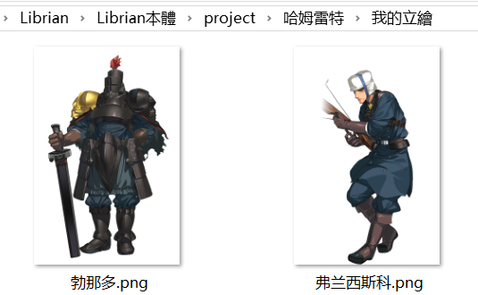
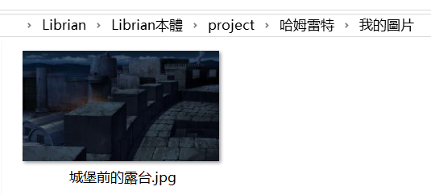

10分鐘製作《哈姆雷特》
看來你已經學會了修改劇本的基本操作，接下來我們嘗試在10分鐘之內製作一個叫《哈姆雷特》的Galgame。
(這居然是Galgame？？？)
準備劇本
你可以簡單地在搜尋引擎上找到《哈姆雷特》的劇本，這裏我們用第一段測試就足夠了。
第一场 艾尔西诺。城堡前的露台
弗兰西斯科立台上守望。勃那多自对面上。
勃那多 那边是谁？
弗兰西斯科 不，你先回答我；站住，告诉我你是什么人。
勃那多 国王万岁！
弗兰西斯科 勃那多吗？
勃那多 正是。
弗兰西斯科 你来得很准时。
勃那多 现在已经打过十二点钟；你去睡吧，弗兰西斯科。
弗兰西斯科 谢谢你来替我；天冷得厉害，我心里也老大不舒服。
勃那多 你守在这儿，一切都很安静吗？
因爲Librian的劇本和現實劇本很相似，因此只要稍加修改就可以直接使用。
我們就把劇本改成——
> BG 城堡前的露台
勃那多 「那边是谁？」
弗兰西斯科 「不，你先回答我；站住，告诉我你是什么人。」
勃那多 「国王万岁！」
弗兰西斯科 「勃那多吗？」
勃那多 「正是。」
弗兰西斯科 「你来得很准时。」
勃那多 「现在已经打过十二点钟；你去睡吧，弗兰西斯科。」
弗兰西斯科 「谢谢你来替我；天冷得厉害，我心里也老大不舒服。」
勃那多 「你守在这儿，一切都很安静吗？」
(如果你會用正規表達式來修改就更快了)
把上面這個這段劇本複製粘貼到「入口.liber」裏，源劇本的準備工作就完成了。
準備圖像
但是我們還沒有準備圖片，所以現在的遊戲雖然能玩，但是畫面是這樣的——

在工程文件夾裏，進入「我的立繪」，隨便放兩張圖，起名叫「弗兰西斯科.png」和「勃那多.png」。
再往「我的圖片」裏放一張背景，叫「城堡前的露台.jpg」或者「城堡前的露台.png」。
(雖然建議使用PSD格式的立繪，這裏先隨便湊合一下吧。)


(樣例是從蘭斯裏抓出來的，我去哪裏找什麼「城堡上的露臺」……)
重新運行遊戲，現在的場景變成了——

稍作修飾
這個遊戲已經可以玩了，但是只能同時顯示一個人的立繪，一直切換讓人好煩。
爲了讓 弗兰西斯科 和 勃那多 同臺演出，我們來指定一個雙人鏡頭 + [勃那多, 弗兰西斯科]。
把剛纔的劇本改成——
> BG 城堡前的露台
勃那多 「那边是谁？」
+ [勃那多, 弗兰西斯科]
弗兰西斯科 「不，你先回答我；站住，告诉我你是什么人。」
勃那多 「国王万岁！」
……
這樣一來，畫面變成了——

結束
對《哈姆雷特》不太滿意？嘛，畢竟只是10分鐘做出來的啦。雖然我覺得除去找素材的時間，可能還不到10分鐘……
你可以在接下來的章節中學習更全面的知識，來把你的galgame做得活龍活現。